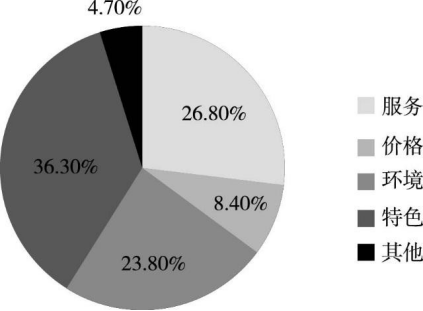

2018 年全国硕士研究生招生考试
英语（二）
（科目代码：204）
☆考生注意事项☆
- 答题前，考生须在试题册指定位置上填写考生编号和考生姓名；在答题卡指定位置上填写报考单位、考生姓名和考生编号,并涂写考生编号信息点。
- 考生须把试题册上的“试卷条形码”粘贴条取下，粘贴在答题卡的“试卷条形码粘贴位置”框中。不按规定粘贴条形码而影响评卷结果的，责任由考生自负。
- 选择题的答案必须涂写在答题卡相应题号的选项上，非选择题的答案必须书写在答题卡指定位置的边框区域内。超出答题区域书写的答案无效；在草稿纸、试题册上答题无效。
- 填（书）写部分必须使用黑色字迹签字笔书写，字迹工整、笔迹清楚；涂写部分必须使用 2B 铅笔填涂。
- 考试结束，将答题卡和试题册按规定交回。
（以下信息考生必须认真填写）
| 考生编号 | |||||||||||||||
|---|---|---|---|---|---|---|---|---|---|---|---|---|---|---|---|
| 考生姓名 |
Section IUse of English
Directions:
Read the following text. Choose the best word (s) for each numbered blank and mark A, B, C or D on the ANSWER SHEET. (10 points)
Why do people read negative Internet comments and do other things that will obviously be painful? Because humans have an inherent need to 1 uncertainty, according to a recent study in Psychological Science. The new research reveals that the need to know is so strong that people will 2 to satisfy their curiosity even when it is clear the answer will 3 .
In a series of four experiments, behavioral scientists at the University of Chicago and the Wisconsin School of Business tested students’ willingness to 4 themselves to unpleasant stimuli in an effort to satisfy curiosity. For one 5 , each participant was shown a pile of pens that the researcher claimed were from a previous experiment. The twist? Half of the pens would 6 an electric shock when clicked.
Twenty-seven students were told which pens were electrified; another twenty-seven were told only that some were electrified. 7 left alone in the room, the students who did not know which ones would shock them clicked more pens and incurred more shocks than the students who knew what would 8. Subsequent experiments reproduced this effect with other stimuli, 9the sound of fingernails on a chalkboard and photographs of disgusting insects.
The drive to 10 is deeply rooted in humans, much the same as the basic drives for 11 or shelter, says Christopher Hsee of the University of Chicago. Curiosity is often considered a good instinct – it can 12 new scientific advances, for instance – but sometimes such 13 can backfire. The insight that curiosity can drive you to do 14 things is a profound one.
Unhealthy curiosity is possible to 15 , however. In a final experiment, participants who were encouraged to 16 how they would feel after viewing an unpleasant picture were less likely to 17 to see such an image. These results suggest that imagining the 18 of following through on one’s curiosity ahead of time can help determine 19 it is worth the endeavor. “Thinking about long-term
20 is key to reducing the possible negative effects of curiosity,” Hsee says. In other words, don’t read online comments.
| 1. A. protect | B. resolve | C. discuss | D. ignore |
|---|---|---|---|
| 2. A. refuse | B. wait | C. regret | D. seek |
| 3. A. hurt | B. last | C. mislead | D. rise |
| 4. A. alert | B. tie | C. treat | D. expose |
| 5. A. message | B. review | C. trial | D. concept |
| 6. A. remove | B. weaken | C. interrupt | D. deliver |
| 7. A. When | B. If | C. Though | D. Unless |
| 8. A. continue | B. happen | C. disappear | D. change |
| 9. A. rather than | B. regardless of | C. such as | D. owing to |
| 10. A. discover | B. forgive | C. forget | D. disagree |
| 11. A. pay | B. marriage | C. schooling | D. food |
| 12. A. lead to | B. rest on | C. learn from | D. begin with |
| 13. A. withdrawal | B. persistence | C. inquiry | D. diligence |
| 14. A. self-reliant | B. self-destructive | C. self-evident | D. self-deceptive |
| 15. A. define | B. resist | C. replace | D. trace |
| 16. A. overlook | B. predict | C. design | D. conceal |
| 17. A. remember | B. promise | C. choose | D. pretend |
| 18. A. relief | B. plan | C. duty | D. outcome |
| 19. A. why | B. whether | C. where | D. how |
| 20. A. consequences | B. investments | C. strategies | D. limitations |
Section IIReading Comprehension
Part A Directions:
Read the following four texts. Answer the questions after each text by choosing A, B, C or D. Mark your answers on the ANSWER SHEET. (40 points)
Text 1
It is curious that Stephen Koziatek feels almost as though he has to justify his efforts to give his students a better future.
Mr. Koziatek is part of something pioneering. He is a teacher at a New Hampshire high school where learning is not something of books and tests and mechanical memorization, but practical. When did it become accepted wisdom that students should be able to name the 13th president of the United States but be utterly overwhelmed by a broken bike chain?
As Koziatek knows, there is learning in just about everything. Nothing is necessarily gained by forcing students to learn geometry at a graffitied desk stuck with generations of discarded chewing gum. They can also learn geometry by assembling a bicycle.
But he’s also found a kind of insidious prejudice. Working with your hands is seen as almost a mark of inferiority. Schools in the family of vocational education “have that stereotype…that it’s for kids who can’t make it academically,” he says.
On one hand, that viewpoint is a logical product of America’s evolution. Manufacturing is not the economic engine that it once was. The job security that the US economy once offered to high school graduates has largely evaporated. More education is the new principle. We want more for our kids, and rightfully so.
But the headlong push into bachelor’s degrees for all – and the subtle devaluing of anything less – misses an important point: That’s not the only thing the American economy needs. Yes, a bachelor’s degree opens more doors. But even now, 54 percent of the jobs in the country are middle-skill jobs, such as construction and high-skill manufacturing. But only 44 percent of workers are adequately trained.
In other words, at a time when the working class has turned the country on its political head, frustrated that the opportunity that once defined America is vanishing, one obvious solution is staring us in the face. There is a gap in working-class jobs, but the workers who need those jobs most aren’t equipped to do them. Koziatek’s Manchester School of Technology High School is trying to fill that gap.
Koziatek’s school is a wake-up call. When education becomes one-size-fits-all, it risks overlooking a nation’s diversity of gifts.
- A broken bike chain is mentioned to show students’ lack of .
A. practical ability
B. academic training
C. pioneering spirit
D. mechanical memorization
- There exists the prejudice that vocational education is for kids who .
A. have a stereotyped mind
B. have no career motivation
C. are not academically successful
D. are financially disadvantaged
- We can infer from Paragraph 5 that high school graduates .
A. used to have big financial concerns
B. used to have more job opportunities
C. are reluctant to work in manufacturing
D. are entitled to more educational privileges
- The headlong push into bachelor’s degrees for all .
A. helps create a lot of middle-skill jobs
B. may narrow the gap in working-class jobs
C. is expected to yield a better-trained workforce
D. indicates the overvaluing of higher education
- The author’s attitude toward Koziatek’s school can be described as .
A. supportive
B. tolerant
C. disappointed
D. cautious
Text 2
While fossil fuels – coal, oil, gas – still generate roughly 85 percent of the world’s energy supply, it’s clearer than ever that the future belongs to renewable sources such as wind and solar. The move to renewables is picking up momentum around the world: They now account for more than half of new power sources going on line.
Some growth stems from a commitment by governments and farsighted businesses to fund cleaner energy sources. But increasingly the story is about the plummeting prices of renewables, especially wind and solar. The cost of solar panels has dropped by 80 percent and the cost of wind turbines by close to one-third in the past eight years.
In many parts of the world renewable energy is already a principal energy source. In Scotland, for example, wind turbines provide enough electricity to power 95 percent of homes. While the rest of the world takes the lead, notably China and Europe, the United States is also seeing a remarkable shift. In March, for the first time, wind and solar power accounted for more than 10 percent of the power generated in the US, reported the US Energy Information Administration.
President Trump has underlined fossil fuels – especially coal – as the path to economic growth. In a recent speech in Iowa, he dismissed wind power as an unreliable energy source. But that message did not play well with many in Iowa, where wind turbines dot the fields and provide 36 percent of the state’s electricity generation – and where tech giants like Microsoft are being attracted by the availability of clean energy to power their data centers.
The question “what happens when the wind doesn’t blow or the sun doesn’t shine?” has provided a quick put-down for skeptics. But a boost in the storage capacity of batteries is making their ability to keep power flowing around the clock more likely.
The advance is driven in part by vehicle manufacturers, who are placing big bets on battery-powered electric vehicles. Although electric cars are still a rarity on roads now, this massive investment could change the picture rapidly in coming years.
While there’s a long way to go, the trend lines for renewables are spiking. The pace of change in energy sources appears to be speeding up – perhaps just in time to have a meaningful effect in slowing climate change. What Washington does – or doesn’t do – to promote alternative energy may mean less and less at a time of a global shift in thought.
- The word “plummeting” (Line 3, Para. 2) is closest in meaning to .
A. stabilizing
B. changing
C. falling
D. rising
- According to Paragraph 3, the use of renewable energy in America .
A. is progressing notably
B. is as extensive as in Europe
C. faces many challenges
D. has proved to be impractical
- It can be learned that in Iowa, .
A. wind is a widely used energy source
B. wind energy has replaced fossil fuels
C. tech giants are investing in clean energy
D. there is a shortage of clean energy supply
- Which of the following is true about clean energy according to Paragraphs 5&6？
A. Its application has boosted battery storage.
B. It is commonly used in car manufacturing.
C. Its continuous supply is becoming a reality.
D. Its sustainable exploitation will remain difficult.
- It can be inferred from the last paragraph that renewable energy .
A. will bring the US closer to other countries
B. will accelerate global environmental change
C. is not really encouraged by the US government
D. is not competitive enough with regard to its cost
Text 3
The power and ambition of the giants of the digital economy is astonishing-
Amazon has just announced the purchase of the upmarket grocery chain Whole Foods for ＄ 13.5bn, but two years ago Facebook paid even more than that to acquire the WhatsApp messaging service, which doesn’t have any physical product at all. What WhatsApp offered Facebook was an intricate and finely detailed web of its users’ friendships and social lives.
Facebook promised the European commission then that it would not link phone numbers to Facebook identities, but it broke the promise almost as soon as the deal went through. Even without knowing what was in the messages, the knowledge of who sent them and to whom was enormously revealing and still could be. What political journalist, what party whip, would not want to know the makeup of the WhatsApp groups in which Theresa May’s enemies are currently plotting? It may be that the value of Whole Foods to Amazon is not so much the 460 shops it owns, but the records of which customers have purchased what.
Competition law appears to be the only way to address these imbalances of power. But it is clumsy. For one thing, it is very slow compared to the pace of change within the digital economy. By the time a problem has been addressed and remedied it may have vanished in the marketplace, to be replaced by new abuses of power. But there is a deeper conceptual problem, too. Competition law as presently interpreted deals with financial disadvantage to consumers and this is not obvious when the users of these services don’t pay for them. The users of their services are not their customers. That would be the people who buy advertising
from them – and Facebook and Google, the two virtual giants, dominate digital
advertising to the disadvantage of all other media and entertainment companies.
The product they’re selling is data, and we, the users, convert our lives to data for the benefit of the digital giants. Just as some ants farm the bugs called aphids for the honeydew they produce when they feed, so Google farms us for the data that our digital lives yield. Ants keep predatory insects away from where their aphids feed; Gmail keeps the spammers out of our inboxes. It doesn’t feel like a human or democratic relationship, even if both sides benefit.
- According to Paragraph 1, Facebook acquired WhatsApp for its .
A. digital products
B. user information
C. physical assets
D. quality service
- Linking phone numbers to Facebook identities may .
A. worsen political disputes
B. mess up customer records
C. pose a risk to Facebook users
D. mislead the European commission
- According to the author, competition law .
A. should serve the new market powers
B. may worsen the economic imbalance
C. should not provide just one legal solution
D. cannot keep pace with the changing market
- Competition law as presently interpreted can hardly protect Facebook users because .
A. they are not defined as customers
B. they are not financially reliable
C. the services are generally digital
D. the services are paid for by advertisers
- The ants analogy is used to illustrate .
A. a win-win business model between digital giants
B. a typical competition pattern among digital giants
C. the benefits provided for digital giants’ customers
D. the relationship between digital giants and their users
Text 4
To combat the trap of putting a premium on being busy, Cal Newport, author of Deep Work: Rules for Focused Success in a Distracted World, recommends building a habit of “deep work” – the ability to focus without distraction.
There are a number of approaches to mastering the art of deep work – be it lengthy retreats dedicated to a specific task; developing a daily ritual; or taking a “journalistic” approach to seizing moments of deep work when you can throughout the day. Whichever approach, the key is to determine your length of focus time and stick to it.
Newport also recommends “deep scheduling” to combat constant interruptions and get more done in less time. “At any given point, I should have deep work scheduled for roughly the next month. Once on the calendar, I protect this time like I would a doctor’s appointment or important meeting”, he writes.
Another approach to getting more done in less time is to rethink how you prioritise your day – in particular how we craft our to-do lists. Tim Harford, author of Messy: The Power of Disorder to Transform Our Lives, points to a study in the early 1980s that divided undergraduates into two groups: some were advised to set out monthly goals and study activities; others were told to plan activities and goals in much more detail, day by day.
While the researchers assumed that the well-structured daily plans would be most effective when it came to the execution of tasks, they were wrong: the detailed daily plans demotivated students. Harford argues that inevitable distractions often render the daily to-do list ineffective, while leaving room for improvisation in such a list can reap the best results.
In order to make the most of our focus and energy, we also need to embrace downtime, or as Newport suggests, “be lazy”.
“Idleness is not just a vacation, an indulgence or a vice; it is as indispensable to the brain as vitamin D is to the body…[idleness] is, paradoxically, necessary to getting any work done,” he argues.
Srini Pillay, an assistant professor of psychiatry at Harvard Medical School, believes this counterintuitive link between downtime and productivity may be due to the way our brains operate. When our brains switch between being focused and unfocused on a task, they tend to be more efficient.
“What people don’t realise is that in order to complete these tasks they need to use both the focus and unfocus circuits in their brain,” says Pillay.
- The key to mastering the art of deep work is to .
A. keep to your focus time
B. list your immediate tasks
C. make specific daily plans
D. seize every minute to work
- The study in the early 1980s cited by Harford shows that .
A. distractions may actually increase efficiency
B. daily schedules are indispensable to studying
C. students are hardly motivated by monthly goals
D. detailed plans may not be as fruitful as expected
- According to Newport, idleness is .
A. a desirable mental state for busy people
B. a major contributor to physical health
C. an effective way to save time and energy
D. an essential factor in accomplishing any work
- Pillay believes that our brains’ shift between being focused and unfocused .
A. can result in psychological well-being
B. can bring about greater efficiency
C. is aimed at better balance in work
D. is driven by task urgency
- This text is mainly about .
A. ways to relieve the tension of busy life
B. approaches to getting more done in less time
C. the key to eliminating distractions
D. the cause of the lack of focus time
Part B Directions:
Read the following text and answer the questions by choosing the most suitable subtitles from the list A-G for each numbered paragraph (41-45). There are two extra subtitles which you do not need to use. Mark your answers on the ANSWER SHEET. (10 points)
[A] Just say it
[B] Be present
[C] Pay a unique compliment
[D] Name, places, things
[E] Find the “me too”s
[F] Skip the small talk
[G] Ask for an opinion
Five ways to make conversation with anyone
Conversations are links, which means when you have a conversation with a new person a link gets formed and every conversation you have after that moment will strengthen the link.
You meet new people every day: the grocery worker, the cab driver, new people at work or the security guard at the door. Simply starting a conversation with them will form a link.
Here are five simple ways that you can make the first move and start a conversation with strangers.
Suppose you are in a room with someone you don’t know and something within you says “I want to talk with this person” – this is something that mostly happens with all of us. You wanted to say something – the first word – but it just won’t come out, it feels like it is stuck somewhere. I know the feeling and here is my advice: just get it out.
Just think: what is the worst that could happen? They won’t talk with you? Well, they are not talking with you now!
I truly believe that once you get that first word out everything else will just flow.
So keep it simple: “Hi”, “Hey”or “Hello” – do the best you can to gather all of the enthusiasm and energy you can, put on a big smile and say “Hi”.
It is a problem all of us face; you have limited time with the person that you want to talk with and you want to make this talk memorable.
Honestly, if we got stuck in the rut of “hi”, “hello”, “how are you?” and “what is going on?”, you will fail to give the initial jolt to the conversation that can make it so memorable.
So don’t be afraid to ask more personal questions. Trust me, you’ll be surprised to see how much people are willing to share if you just ask.
When you meet a person for the first time, make an effort to find the things which you and that person have in common so that you can build the conversation from that point. When you start conversation from there and then move outwards, you’ll find all of a sudden that the conversation becomes a lot easier.
Imagine you are pouring your heart out to someone and they are just busy on their phone, and if you ask for their attention you get the response “I can multitask”.
So when someone tries to communicate with you, just be in that communication wholeheartedly. Make eye contact. Trust me, eye contact is where all the magic happens. When you make eye contact, you can feel the conversation.
You all came into a conversation where you first met the person, but after some time you may have met again and have forgotten their name. Isn’t that awkward! So, remember the little details of the people you met or you talked with; perhaps the places they have been to, the places they want to go, the things they like, the things they hate – whatever you talk about.
When you remember such things you can automatically become investor in their wellbeing. So they feel a responsibility to you to keep that relationship going.
That’s it. Five amazing ways that you can make conversation with almost anyone. Every person is a really good book to read, or to have a conversation with!
Section IIITranslation
46. Directions:
Translate the following text into Chinese. Write your translation neatly on the ANSWER SHEET. (15 points)
A fifth grader gets a homework assignment to select his future career path from a list of occupations. He ticks “astronaut” but quickly adds “scientist” to the list and selects it as well. The boy is convinced that if he reads enough, he can explore as many career paths as he likes. And so he reads – everything from encyclopedias to science fiction novels. He reads so passionately that his parents have to institute a “no reading policy” at the dinner table.
That boy was Bill Gates, and he hasn’t stopped reading yet – not even after becoming one of the most successful people on the planet. Nowadays, his reading material has changed from science fiction and reference books: recently, he revealed that he reads at least 50 nonfiction books a year. Gates chooses nonfiction titles because they explain how the world works. “Each book opens up new avenues of knowledge to explore”, Gates says.
Section Ⅳ Writing
Part A
- Directions:
Suppose you have to cancel your travel plan and will not be able to visit Professor Smith. Write him an email to
- apologize and explain the situation, and
- suggest a future meeting.
You should write about 100 words on the ANSWER SHEET.
Do not use your own name. Use “Li Ming” instead.
Do not write your address. (10 points)
Part B
- Directions:
Write an essay based on the chart below. In your writing, you should
- interpret the chart, and
- give your comments.
You should write about 150 words on the ANSWER SHEET. (15 points)

2017 年某市消费者选择餐厅时的关注因素
2018年英语二真题答案
Section Ⅰ Use of English
1.B 2.D 3.A 4.D 5.C 6.D 7.A 8.B 9.C 10.A
11.D 12.A 13.C 14.B 15.B 16.B 17.C 18.D 19.B 20.A
Section Ⅱ Reading Comprehension
Part A
| Text 1 | 21~25 | A C B D A | Text 2 | 26~30 | C A A C C |
|---|---|---|---|---|---|
| Text 3 | 31~35 | B C D A D | Text 4 | 36~40 | A D D B B |
Part B
- A 42.F 43.E 44.B 45.D
Part C
一个五年级的学生收到一份家庭作业：即从一系列职业中选择自己未来的职业道路。他勾划了“宇航员”，但很快由将“科学家”添加到列表中，并也将其选中。这个男孩相信，如果他读得足够多，他就可以探索尽可能多的他喜欢的职业道路。所以他读书广泛——从百科全书到科幻小说。他读得如此投入，以至于他的父母不得不制定一个：在餐桌上的“不读书政策”。
那个男孩就是比尔盖茨，他没有停止阅读，甚至在他成为这个星球上最成功的人士之一后，仍旧没有停下来。现在，他的阅读材料已经不再是科幻小说和工具书了：最近据他所说，他一年内至少读了50本非科幻小说。比尔盖茨选择非科幻小说类书籍，是因为这类书籍解释了世界是如何运作的。“每本书都开辟了新的知识探索渠道。”盖茨说。
Section III Writing
47、48 见解析